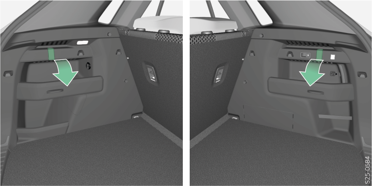

<!-- topicId: 4643ad5aaddc440badb0bd99167b92e5_2_fr_FR | type: topic -->
<h1>Vue d’ensemble</h1>
<html data-dyxml-version="2"><div lang="fr-FR"><div class="topic-content"><section data-type="topic-allgemein" data-dl-contains="block" id="ID_0568111a94eade1dac1445251de4e459-3e54e07dd05c2e7aac1445253ebca1b8-fr-FR"><p id="ID_2934ced294eade1dac14452572e04e69-3e54e07dd05c2e7aac1445253ebca1b8-fr-FR"></p><div data-role="block" data-type="block" id="ID_c0f88bfc94eade1dac14452577bff5d7-3e54e07dd05c2e7aac1445253ebca1b8-fr-FR" hasIllu="true"><div data-type="illu" id="ID_8dd613b0189b11f0b397dd3c6b8a1fb1-3e54e07dd05c2e7aac1445253ebca1b8-fr-FR"><div data-class="vw-layout-narrow" data-dl-wrapper="figure" id="d2293289e36"><figure id="ID_5691dc3ab638cc51ac14452529d19fa9-3e54e07dd05c2e7aac1445253ebca1b8-fr-FR" data-role="" data-type="" data-position=""><div><a data-fancybox="group" media-link="" class="fancybox" data-href="../media/img06b0c105a0d15daaac1445250ea22e83_2_--_--_PNG_3x.png" data-options="{&#34;buttons&#34;:[&#34;fullScreen&#34;, &#34;thumbs&#34;, &#34;close&#34;],&#34;hash&#34;:false}"></img></a></div></figure></div></div></div><div data-role="block" data-type="block" id="ID_81dcb1b6e10de50e0ad95e9b7dabc2f9-3e54e07dd05c2e7aac1445253ebca1b8-fr-FR"><p data-type="p" id="ID_7a0a5372112cd37f0adf42c726e4b345-3e54e07dd05c2e7aac1445253ebca1b8-fr-FR">La charge maximale du crochet est de 7,5 kg.</p></div><div></div></section></div></div></html>